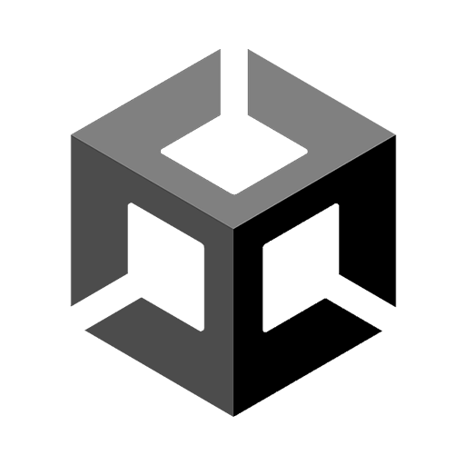

Experience



Halo! Nama saya Muhammad Sulthan Yasin Zain, mahasiswa UPN 'Veteran' Jakarta jurusan Sistem Informasi. Saya memiliki minat di pengembangan web dan manajemen data. Saya senang belajar hal-hal baru dan selalu siap untuk tantangan baru dalam dunia teknologi informasi. Terima kasih telah mengunjungi profil saya!